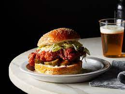

Nashville Hot Chicken Sandwich

Description
Hot take: The first bite of a Nashville Hot Chicken sandwich should send your tastes buds screaming, walking the thin line between pleasure and pain.
It should be savory, salty, spicy, and hot but not so hot that you absolutely can’t taste the other spices and the juicy deep-fried meat. And yes, it should be served with pickle chips on a white bun or bread.
Ingredients
- lots of spices and 4 cups of flour
- 2 cups buttermilk
- 1/4 cup hot sauce
- 2 large eggs
- 1 tbs kosher salt
- 10 boneless, skinless chicken thighs
- oil for frying
- the ingredients necessary to make spicy paste
- 10 buns
- dill pickle slices
Directions
- Make the dredging station and prepare baking sheet.
- Dredge and dip the chicken.
- Heat the oil to 350°F.
- Fry the chicken.
- let the oil cool.
- Make the spicy paste.
- Assemble and serve the sandwich.